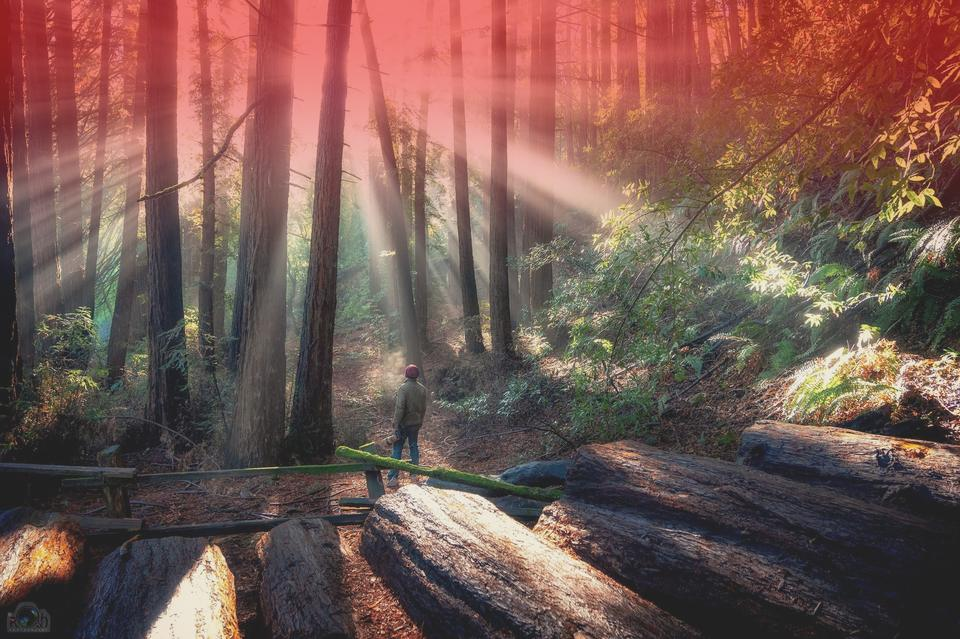
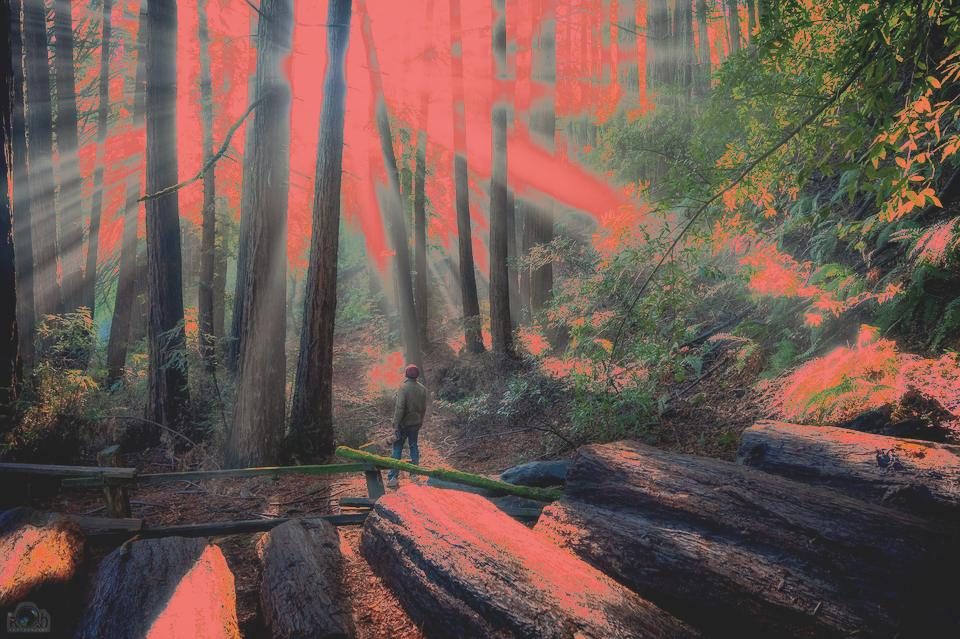
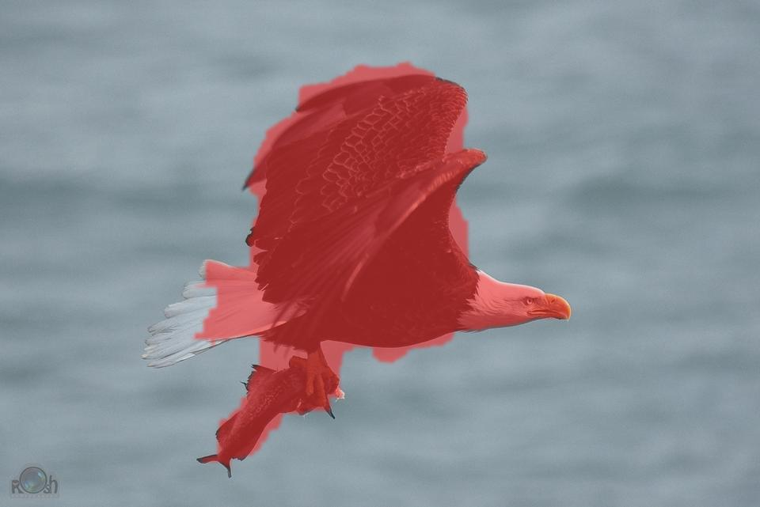

Masking
Edit just part of a photo: darken a sky, brighten a face, warm one corner. A mask says where; its sliders say what.
Start a mask
- In Develop, click the Masking button (the dashed circle under the histogram) or press ⇧W. Or jump straight to a tool: M Linear Gradient, ⇧M Radial Gradient, K Brush.
- Click Create New Mask and pick a kind, then draw it on the photo.
- Move the mask's sliders (Exposure, Temp, Clarity…). They change only the masked area.
- Press Return or click Done. Masks keep working after Masking closes; open it again any time to change them.
You can zoom and move around as usual while masking (Z, double-click, pinch, scroll, or hold Space and drag). Pins and handles stay the same size on screen.
The Masks panel
- Masks, in the order you made them. Click one to select it; double-click to rename. The eye hides its effect.
- A selected mask lists its parts, each with a badge: + added, − subtracted, ∩ intersected.
- New Mask, and with a mask selected, Add or Subtract a part: Brush, Linear Gradient, Radial Gradient, Luminance Range, Select Subject, Select Object.
- Show Overlay (O) tints the selected mask red, so you can see exactly where it lands.
- The selected mask's sliders.
Linear Gradient
A gradual change across the photo, like a graduated filter on a lens: darken a sky, lighten a foreground.

- Draw: drag from where the change should be full to where it should fade out.
- Three lines show the start, middle and end. Lines close together give a hard edge; far apart, a soft one.
- Move: drag the pin in the middle. Widen, narrow or turn: drag an end line.
Radial Gradient
An ellipse: brighten a face, spotlight a subject, or (inverted) darken everything around it.

- Draw: drag from the center outward.
- Feather (0 to 100, default 50) softens the edge.
- The change is inside by default. Tick Invert to put it outside, for a custom vignette.
Brush
Paint the mask where you want it.
| Drag on the photo | Paint. |
| Hold ⌥ while painting, or choose Erase | Erase. |
| [ · ] | Smaller · bigger brush. |
| ⇧[ · ⇧] | Less · more feather. |
Size, Feather and Flow are in the panel. Flow is how much each stroke adds, so low Flow builds up gradually. The pointer is a circle the size of the brush, with an inner circle where the feather begins.
Luminance Range
Selects by brightness: only the parts of the photo between two brightness levels (0 to 100). Smoothness softens the edges of the range.

Overlay: the brightest areasMost useful combined. Intersect a Linear Gradient with a Luminance Range to darken only the bright sky, not the trees that reach into it.
Select Subject and Select Object
Select Subject finds the main subject (people, animals, things in front) with Apple's Vision, on your Mac. Select Object finds something inside a box you drag, so smaller subjects work too; drag the pin to move the box.

Select SubjectBoth have a Feather slider (default 20) to soften Vision's hard edge. To change the background instead of the subject, tick Invert. If Vision finds nothing, the panel says so.
Add, Subtract and Intersect
A mask can have several parts:
- Add
- Joins a part to the mask: two radial gradients on two faces.
- Subtract
- Cuts a part out: brush away the trees from a sky gradient.
- Intersect
- Keeps only where both overlap. Right-click the mask › Intersect Mask With.
Right-click a mask for Rename, Duplicate, Invert, Intersect Mask With and Delete. Right-click a part for Invert, Switch to Add / Subtract and Delete. Delete removes the selected part (the whole mask if it was the last part).
Mask sliders
Each mask has its own: Amount (0 to 200%, scales all of the mask's sliders at once), Temp, Tint, Exposure, Contrast, Highlights, Shadows, Whites, Blacks, Texture, Clarity, Dehaze, Saturation, Sharpness and Noise. They work like the Basic sliders. Double-click a name to reset it; Reset Sliders clears them all.
Change your mind later. Masks stay on the same spot of the photo when you crop, straighten or change the Transform. They're saved with the photo, copied by Copy/Paste Settings and virtual copies, and can be included in presets.